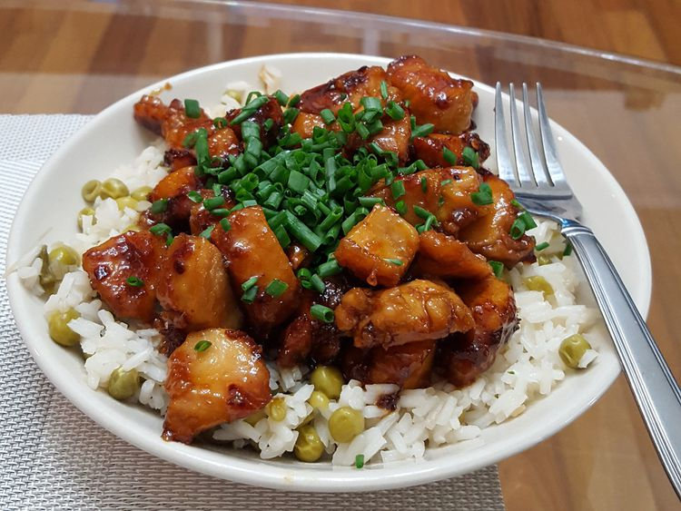

Honey Glazed Chicken
Home

Description
Honey Glazed Chicken is a mouthwatering dish that combines tender,
juicy chicken with a rich, sticky glaze made from sweet honey and savory soy sauce.
The glaze caramelizes beautifully as it cooks, creating a glossy, flavorful coating
that balances sweetness with a subtle savory kick. Perfect for weeknight dinners
or special occasions, this dish is easy to prepare and always a crowd-pleaser.
Ingredients
- 0.25 cups of honey
- 2 tablespoons of soy sauce
- 1.5 tablespoons of olive oil
- A sprinkle of red pepper flakes
- 2 skinless, boneless chicken breast halves, cut into bite-size pieces
Steps
- Whisk honey, soy sauce, and red pepper flakes in a bowl; set aside.
- Heat olive oil in a skillet over medium heat; cook and stir chicken in hot oil until lightly brown, about 5 minutes.
- Pour honey mixture into the skillet; continue to cook and stir until chicken is no longer pink in the center and sauce is thickened, about 5 minutes more.
- Serve hot and enjoy!